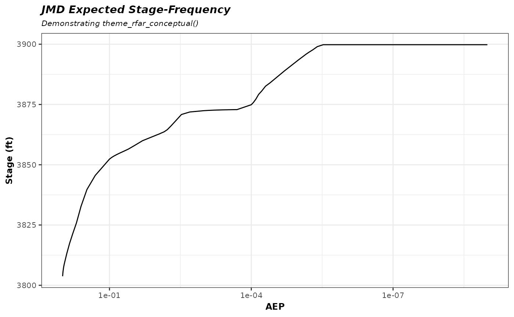

A custom ggplot2 theme used in the rfaR conceptual realization
vignette. Based on theme_bw with tightened text
sizes, italic titles, and the legend suppressed. Intended for figures
that emphasize curves over annotation density.
Examples
library(ggplot2)
ggplot(jmd_rfa_expected, aes(x = AEP, y = Expected)) +
geom_line() +
scale_x_continuous(transform = c("log10", "reverse")) +
labs(title = "JMD Expected Stage-Frequency",
subtitle = "Demonstrating theme_rfar_conceptual()",
x = "AEP", y = "Stage (ft)") +
theme_rfar_conceptual()
